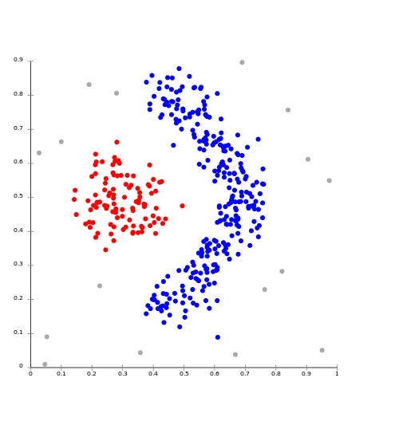

Cluster Analysis
Introduction
Cluster analysis is an unsupervised data mining technique. By unsupervised, I mean that class labels are unknown. Data mining is about finding patterns in data, and then usually those patterns are labeled. For example, if a collection of similar data objects are discovered, they can be put into the same group. These groups can then be given labels, and the model that was used to distill objects into their group can be used on new data objects in the future to discover what group they belong in. When the groups are already known, then the task of distilling objects into groups is considered "supervised". However, if the groups are not known ahead of time, then they need to be discovered. This type of mining is considered "unsupervised". Clustering uses a similarity metric do determine the similarity between objects. Once the similarities, or distances, between all objects are known, clustering can discover "clusters" of objects that are close together. In other words, in finds groups of objects amongst data for which potential groups are not previously known. There are three commonly used clustering techniques that I will discuss here: K-Means, agglomerative hierarchical, and DBSCAN.
K-Means Clustering
K-Means clustering will find K clusters, which is a parameter that will need to be provided to the algorithm. K-Means uses "centroids", a new data point that will be at the center of a cluster. Since K-Means finds K clusters, it uses K number of centroids. K-Means starts by plotting the first centroid randomly amongst the data points. The minimum and maximum values for all points is usually calculated first, so that the location of the centroid is bound by the limits of the data. The second centroid is plotted next. Some algorithms will also do this randomly, while others may choose to plot the second centroid as far as possible from the first one to limit error. If two centroids are randomly placed too close to each other, they could end up splitting a natural cluster into two separate clusters. This process, either random or supervised, is repeated until all centroids are placed. Once all centroids have been plotted, the distance between every centroid and every data point is calculated. Each data point is assigned to the nearest centroid, and K preliminary clusters are formed. The centroid is then moved to a location that represents the mean of all the data points in it's cluster. After the centroids are moved, the distance from data points to centroids is calculated again, and data points are re-assigned to the closes centroid. This process of moving centroids and re-assigning data points to clusters continues until the centroids no longer move, or no longer move more than a specified distance. The Wikipedia article on K-Means provides a good illustration of this process:
-

1) k initial "means" (in this case k=3) are randomly selected from the data set (shown in color).
-

2) k clusters are created by associating every observation with the nearest mean. The partitions here represent the Voronoi diagram generated by the means.
-

3) The centroid of each of the k clusters becomes the new means.
-

4) Steps 2 and 3 are repeated until convergence has been reached.
In the above example, moving the red centroid to the mean of it's member data points resulted in it's picking up of a new member point. Below is an implementation of the K-Means clustering algorithm. It takes K, or the number of desired clusters, as it's only argument, and uses Euclidean distance for measuring the distance between data points and centroids.
K-Means is great at finding distinct natural groupings in data. However, it is very sensitive to the specified K value. Specifying a good value for K may require domain knowledge, and a thorough survey of the data before clustering. K-Means is also sensitive to outliers, as they can easily throw off the accurate placement of a centroid. Finally, K-Means can only find globular clusters in data.
Agglomerative Hierarchical Clustering
Agglomerative hierarchical clustering differs from K-Means by agglomerating all the data points into one cluster, instead of dividing the data points in K different clusters. Agglomerative hierarchical clustering begins by declaring each point as a single member cluster. It then iterates through every single member cluster to determine the two clusters that are closest together. These two single member clusters are joined to form a two member cluster. The centroid of this cluster is re-calculated to be the mean of the two member data points. The previous process is repeated, looking for the next closest pair of clusters, which are again joined. After each join, the centroid of the new cluster is again re-calculated as the mean of all the cluster's member data points. This process of finding the closest pair of clusters, joining them, and re-calculated the newly formed cluster's centroid is repeated until all the data points are a part of a single cluster. The major benefit of this type of clustering is the generation of a hierarchy. It is most commonly used in cases where a hierarchy is needed. The algorithm can be modified to keep track of at which point which data points were joined together to determine a hierarchy of similarity. For example, the first two items to be joined would be the most similar, while the last cluster to join the large cluster represents the least similar items from the rest of the group. Due to the many iterations, and constant re-calculating of cluster centroids, and distance between centroids, agglomerative hierarchical cluster can be very expensive, especially for large data sets. Another drawback to this type of clustering is the lack of a global objective function. At each step, decisions about which clusters should be merged are made locally, and do not take into account the data set at large. Also, all merges are final, unlike K-Means where data objects can be re-assigned to clusters as necessary. This can be problematic for noisy, high-dimensional data.
DBSCAN Clustering
DBSCAN finds clusters based on the density of points within them. Instead of using centroids, like the previous two methods, DBSCAN creates groups of data points based on if there are a certain number of points within a certain radius from a given point. This is great for finding clusters in data that are not globular. For example, take a look at the graph below. DBSCAN was able to discover the red and blue clusters in this data. K-Means, with a K of 2, would have found very different clusters, both like consisting of a mix of points from each of the real, or natural clusters. For data like this, DBSCAN is a much better approach.
DBSCAN requires two parameters, an epsilon and minimum points value. The algorithm begins at a random point, and looks for points in that initial point's epsilon neighborhood. The epsilon neighborhood is a circle around a point with a radius equal to the epsilon value. If the algorithm finds a number of points within this epsilon neighborhood that is equal to or greater than the minimum points value, then all these points are clustered together with the initial point. The epsilon neighborhood of these points is also explored, and if the minimum number of points are found, the points from this neighborhood are added to the cluster. If a point is exactly the epsilon distance from the initial point, it is added to the new cluster, but it's epsilon neighborhood is not added. These are called "edge" points. If a point does not have the minimum number of points within it's epsilon neighborhood, then it is labeled as noise. This process continues until all points are either a part of a cluster, or labeled as noise. In the picture above, points are either apart of the red cluster, the blue cluster, or are noise, denoted by gray.